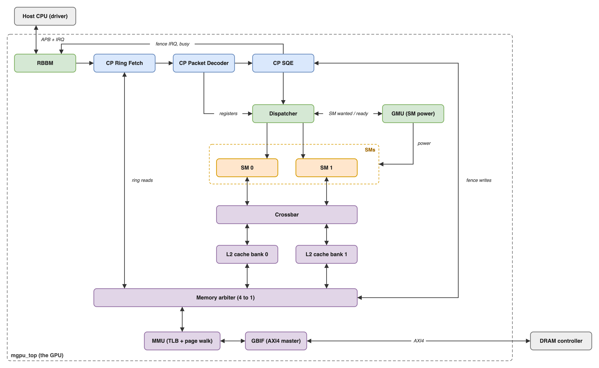
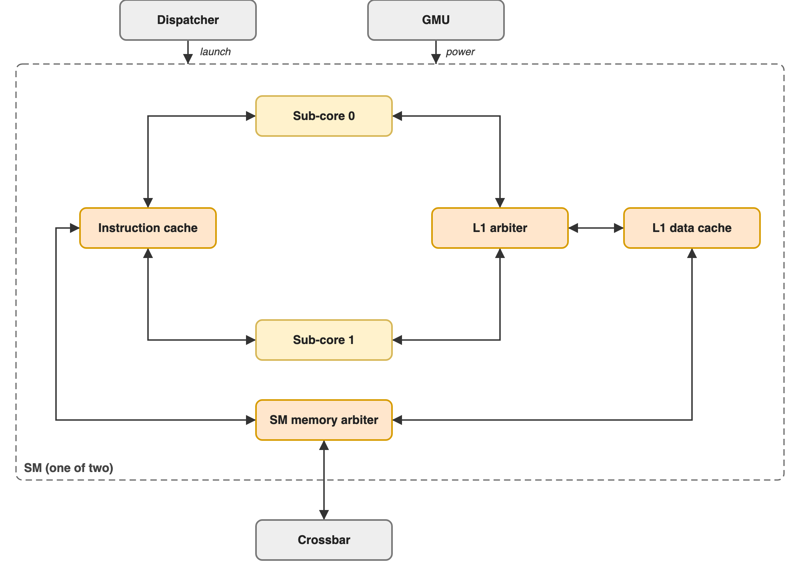

module mgpu #(.SMS(2), .SUBCORES(2), .WARPS(4), .LANES(8)) ;
mGPU: a small GPU,
built to see how GPUs work
GPUs run almost every AI model today, yet how they work inside is mostly a secret. So I built one. mGPU is a small, complete GPU in SystemVerilog: from the CPU's command, to 128 threads running in parallel, and back to memory. Every block is small enough to read in one sitting, and every block is verified on its own.
22blocks, each verified
100%coverage per block
128threads in flight
Tools SystemVerilog · UVM · Verilator · Python
01 · start here
Learn the basics with tiny-gpu
Before mGPU, read tiny-gpu by Adam Majmudar. It is the smallest design that shows the one big idea behind every GPU: many threads run the same instruction at the same time, each on its own data. mGPU starts where tiny-gpu stops.
| tiny-gpu | mGPU | |
|---|---|---|
| Goal | The smallest design that shows the GPU idea | The same idea, plus the parts real GPUs need to be fast |
| Size | 2 cores × 4 threads, 8-bit data | 2 SMs × 2 sub-cores × 4 warps × 8 threads, 32-bit data |
| Running code | One instruction at a time, in 6 steps | A warp scheduler sends out a ready warp every cycle |
| Waiting for memory | The whole core stops | Other warps keep working while one waits |
if / else | All threads must take the same path | Threads can split up and join back (SIMT stack) |
| Memory | One simple controller, no cache | Caches, shared memory, virtual memory, AXI4 bus and DRAM |
| Starting a kernel | Testbench raises a start pin | The CPU writes commands; a command processor runs them |
| Testing | 2 kernel tests | A UVM testbench per block, plus a full-chip test against a reference model |
What the guide covers What a GPU is, how tiny-gpu runs one instruction, a kernel traced thread by thread, and which mGPU block replaces each tiny-gpu part. All in simple words.
02 · how it works
One kernel, start to finish
Follow a single job through the chip. Each step is one or two blocks you can open and read.
- The CPU gives the orderIt writes commands into a ring buffer in memory, then rings a doorbell register.
- The command processor reads itIt fetches and decodes the commands, then runs them: set up, launch a kernel, write a fence.
- The work is split upThe dispatcher cuts the kernel into workgroups and sends each one to a free sub-core.
- The threads runThe warp scheduler picks a ready warp every cycle. The ALU, SFU, LSU or barrier does the work.
- Memory is reached step by stepL1 cache → crossbar → L2 cache → MMU → AXI4 bus → DRAM.
- The CPU hears it is doneThe command processor writes a fence value and raises an interrupt.
03 · floorplan
Where every block sits
Three zoom levels: the whole chip, one SM, and one sub-core. Each box is a block in the repo.


04 · the blocks
22 blocks, four jobs
Every block lives in its own folder with its RTL, its UVM testbench and its own PDF.
01
Take orders from the CPU
Read the command stream and run it, in order.
- RBBM: the CPU's register window, interrupts, hang watchdog, perf counters.
- Ring fetch: reads commands from the ring buffer in memory.
- Packet decoder: splits commands into register writes and operations.
- SQE: runs them: launch a kernel, write a fence, wait for idle.
02
Hand out the work
Turn one kernel into many small jobs, and keep power low.
- Dispatcher: cuts a kernel into workgroups and launches them on free sub-cores.
- GMU: switches idle SMs off and wakes them when work arrives.
- Top: wires every block into the full GPU and adds DRAM.
03
Run the threads
The SM: where warps of 8 threads run the same instruction together.
- Warp scheduler: picks a ready warp every cycle; a scoreboard blocks only what must wait.
- SIMT stack: lets threads of one warp split at an
ifand join back. - Register file: banked registers for all warps; gathers operands.
- ALU · SFU: 8-lane math; slow divide and remainder.
- LSU · shared memory · barrier: loads and stores, merged when lanes share a line.
- I-cache · SM: instructions close by; the wrapper around it all.
04
Feed it data
Get every load and store to DRAM and back, as fast as possible.
- L1 data cache: per SM, write-through, cleared each kernel.
- Crossbar: sends each request to the L2 bank that owns it.
- L2 cache: 2 banks, write-back, shared by all SMs.
- MMU: virtual to physical addresses, with a TLB and page tables.
- GBIF · DRAM controller: AXI4 bursts into memory with real row timing.
05 · read more
Everything is written down
Every design decision and every verification decision comes with the reason behind it.
GPU basics with tiny-gpu
Start here if GPUs are new to you. 9 pages, simple words.
Design and verification guide
Every block: architecture, RTL choices, waveforms, testbench and results.
RTL issue log
Every real bug verification caught: the cause, the fix, and how to find bugs like it.
The code
RTL, UVM testbenches, logs and coverage for all 22 blocks.